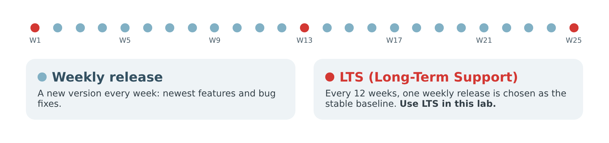

Lab 1 · Installing Jenkins
1. Before You Start
Jenkins and Java
Jenkins is written in Java, a platform-independent language. Like any other Java application, it can be installed on many operating systems: Linux, Windows, macOS, and more.
Jenkins releases
The Jenkins project publishes two release lines:
- Weekly: a new version every week, delivering the newest features and bug fixes to users and plugin developers.
- LTS (Long-Term Support): every 12 weeks, one weekly release is selected as the stable release for that period. It then receives only important fixes.

Prerequisites
Minimum hardware (enough for learning and testing):
- 256 MB of RAM
- 1 GB of disk space (at least 10 GB if you run Jenkins as a Docker container)
Recommended hardware for a small team: 4 GB of RAM or more, and 50 GB of disk space or more. Production servers need more; see the hardware recommendations.
Software:
- Java 21 or Java 25. Older versions (Java 8, 11 and 17) are no longer supported by current Jenkins releases. See the Java support policy.
- A modern web browser: Google Chrome, Mozilla Firefox, Microsoft Edge or Apple Safari. Internet Explorer is not supported. See the browser support policy.